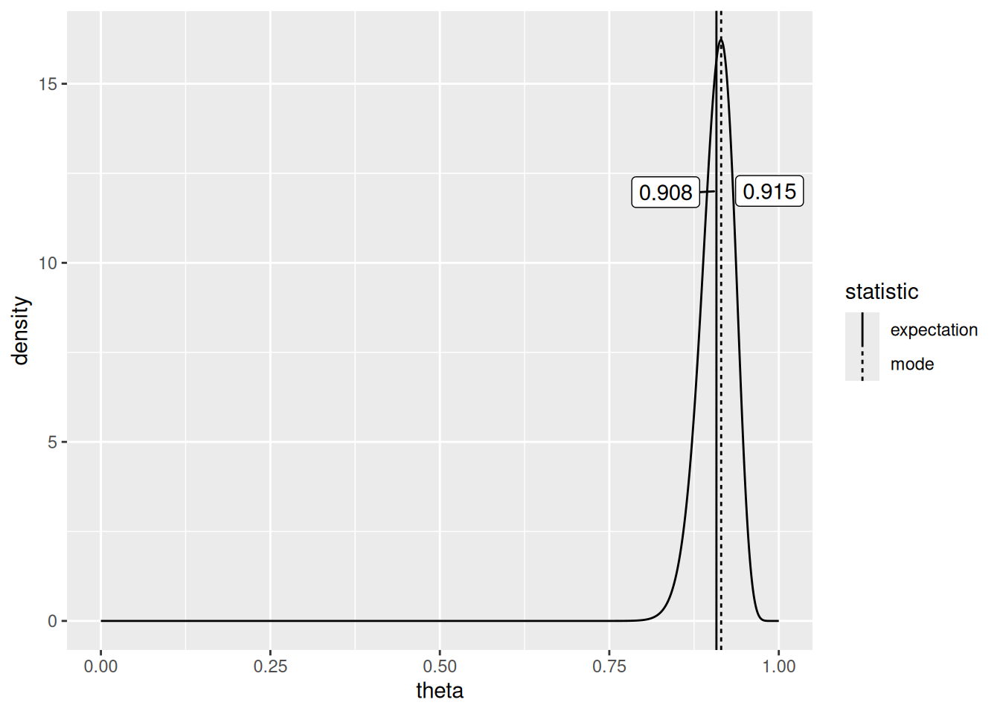

Chapter 3: One-parameter models
The Binomial model
1998 General Social Survey: Females over age 65, \(1 = \text{happy}\), \(0 = \text{unhappy}\). \(n = 129\). So let the survey be 129 exchangeable random variables \(Y_1, \dots, Y_{129}\).
Under our model, conditioned on some \(\theta\), \(Y_i\) are i.i.d. binary random variables with probability \(\theta\). So the joint probability is
\[\begin{align} p(y_1, \dots, y_{129} \mid \theta) = \theta^{\sum_{i} y_i} (1 - \theta)^{129 - \sum_i y_i} \end{align}\]
Now we need to specify our prior distribution
Uniform prior
Imagine our prior is \(\theta \sim \text{Uniform}(0, 1)\). What this means is \(P(a \leq \theta \leq b) = P(a + c \leq \theta \leq b + c)\) for all compatible \(a, b, c\). In other words, the probability of theta falling in an interval of a given width is constant, regardless of where the interval is.
Then, notice
\[\begin{align} p(\theta \mid y_1, \dots, y_{129}) &= \frac{p(y_1, \dots, y_{129} \mid \theta) p(\theta)}{p(y_1, \dots, y_{129})} \\ &= \frac{p(y_1, \dots, y_{129} \mid \theta)}{p(y_1, \dots, y_{129})} & (\text{since $p(\theta)$ is constant for all $\theta$}) \\ &\propto p(y_1, \dots, y_{129} \mid \theta) \end{align}\]
so \(p(\theta \mid Y)\) and \(p(y \mid \theta)\) have the same shape (see MLE discussion in Chapter 1).
Data and posterior distribution
Say the observed proportion is 118 happy out of 129 (91%). Our sampling model for some fixed \(\theta\) is
\[\begin{align} p(y \mid \theta) = \theta^{118} (1 - \theta)^{11} \end{align}\]
linking this back to Bayes’ rule above, we have the posterior probability
\[\begin{align} p(\theta \mid y) = \frac{\theta^{118} (1 - \theta)^{11}}{p(y)} \end{align}\]
We will often (WHEN would we not normalize?) want to be more precise than this and know about the scale of the posterior probability, not just the shape. This requires calculating \(p(y) = p(y_1, \dots, y_{129})\):
\[\begin{align} 1 &= \int_0^1 p(\theta \mid y) \; d\theta & (\text{Law of total probability}) \\ &= \int_0^1 \theta^{111} (1 - \theta)^{11} / p(y) \; d\theta \\ &= \frac{1}{p(y)} \int_0^1 \theta^{118} (1 - \theta)^{11} \; d\theta & (\text{Note $p(y)$ is constant for fixed $y$})\\ &= \frac{1}{p(y)} \frac{\Gamma(119) \Gamma(12)}{\Gamma(131)} & (\text{From calculus})\\ \end{align}\]
so \(p(y) = \frac{\Gamma(119) \Gamma(12)}{\Gamma(131)} \approx 2.89 \times 10^{-18}\). Since our \(y_i\) are exchangeable, this holds true for any sequences of \(y_i\) with 118 ones and 11 zeros.
So, finally, the posterior probability is
\[\begin{align} p(\theta \mid y) &= \frac{\Gamma(131)}{\Gamma(119) \Gamma(12)} \theta^{118} (1 - \theta)^11 \\ &= \frac{\Gamma(131)}{\Gamma(119) \Gamma(12)} \theta^{119 - 1} (1 - \theta)^{12 - 1} & (\text{Beta parameterization})\\ \end{align}\]
which happens to be a beta distribution with parameters \(a = 119\) and \(b = 12\).
If \(Y \sim \text{Beta}(a, b)\), then
- PDF: \(p(y) = \frac{\Gamma(a + b)}{\Gamma(a)\Gamma(b)} y^{a - 1} (1 - y)^{b - 1}\)
- \(\mathbb{E}(Y) = \frac{a}{a + b}\)
- \(\text{Mode}(Y) = \frac{a - 1}{a + b - 2}\)
- \(\text{Var}(Y) = \frac{ab}{(a + b)^2 (a + b + 1)}\)
In our case, our posterior looks like:
Inference for exchangeable binary data (i.e. more generally)
Recall for our binary data \(Y_1, \dots, Y_n\) that
\[\begin{align} p(\theta \mid y) &= \frac{p(y \mid \theta) p(\theta)}{p(y)} \\ &= \frac{\theta^{\sum y_i} (1 - \theta)^{n - \sum y_i} p(\theta)}{p(y)} & \text{(Since i.i.d.)} \\ \end{align}\]
Importantly, the quantity \(\sum_{i = 1}^n Y_i\) is the only statistic that is needed to calculate posterior probabilities of \(\theta\). So it is a sufficient statistic for making inference about \(\theta\). The statistic \(Y = \sum Y_i\) has a binomial distribution with parameters \((n, \theta)\). Then,
\[\begin{align} p(y \mid \theta) &= {n \choose y} \theta^y (1 - \theta)^{n - y} \end{align}\]
Note: I skip the general derivation of posterior probabilities for uniform prior here, since a uniform prior is also a \(\text{Beta}(a, b)\).
Now let’s calculate the posterior probability \(p(\theta \mid y)\) when \(p(\theta)\) is not uniform; in particular, when our prior on \(\theta\) is a Beta distribution (\(\theta \sim \text{Beta}(a, b)\)):
\[\begin{align} p(\theta \mid y) &= \frac{p(\theta) p(y \mid \theta)}{p(y)} & \\ &= \frac{1}{p(y)} \times \underbrace{\frac{\Gamma(a + b)}{\Gamma(a) \Gamma(b)}\theta^{a - 1}(1 - \theta)^{b - 1}}_{\text{PDF of $\text{Beta}(a, b)$}} \times \underbrace{{n \choose y} \theta^y (1 - \theta)^{n - y}}_{\text{$p(y \mid \theta)$ above}} & \\ &= c \times \theta^{a + y - 1} (1 - \theta)^{b + n - y - 1} & \text{(Combine $\theta$s)} \ \end{align}\]\end{align}
where \(c = f(n, y, a, b)\) is just compressing the other stuff in the equation into a constant, since it doesn’t depend on \(\theta\). Now, notice that the term with \(\Gamma\)s in the above equation is the PDF of \(\theta \sim \text{Beta}(a, b)\), which can also be expressed with a constant \(c = f(a, b)\): \(p(\theta) = c \theta^{a - 1}(1 - \theta)^{b - 1}\). Notice that this looks just like the equation above: thus, \(p(\theta)\) and \(p(\theta \mid y)\) are both proportional to \(\theta^{a - 1} (1 - \theta)^{b - 1}\) by some constant \(c\).
Now, since we know that as probability distributions, \(\int p(\theta) = \int p(\theta \mid y) \; d\theta = 1\), we also know that the functions share the same scale, which means that \(p(\theta \mid y)\) is actually a Beta PDF!
\[ (\theta \mid y) \sim \text{Beta}(a + y, b + n - y). \]
We therefore call Beta distributions conjugate priors for Binomial distributions.
Conjugacy
Conjugacy. A class \(\mathcal{P}\) of prior distributions for \(\theta\) are conjugate priors of a sampling model \(p(y \mid \theta)\) if \[ p(\theta) \in \mathcal{P} \implies p(\theta \mid y) \in \mathcal{P}.\]
Conjugate priors are very convenient and making certain calculations easy, since there is some convenient closed form solution for the distribution of a model posterior given a model prior and observed data.
Now, if you remember from Chatper 1, since the expectation of a Beta distribution is \(\frac{a}{a + b}\),
\[\begin{align} \mathbb{E}(\theta \mid y) &= \frac{a + y}{a + b + n} \\ &= \frac{a + b}{a + b + n} \frac{a}{a + b} + \frac{n}{a + b + n}\frac{y}{n} \\ \end{align}\]
Where \(\theta_0 = \frac{a}{a + b}\) can be seen as our “prior expectation”, \(\frac{y}{n}\) is the sample mean, and \(w = a + b\) can be seen as the strength of belief in our prior. I leave the equation expressed above with the \(a\)s and \(b\)s expanded because another intuitive way of thinking about the problem is by thinking of \(a\) as the “prior number of 1s”, \(b\) as the “prior number of 0s”, and \(a + b\) as the “prior sample size”. If you play around with the equation above, seeing how the values change with various \(a\) and \(b\) prior choices, you’ll notice it has several nice properties that intuitively balance the expectation and strength of our prior with the amount of data we receive.
Prediction
Assume we’ve already seen data \(y_1, \dots y_n\) and we want to predict value of the next observation \(\tilde{Y}\). Intuitively we should predict \(\tilde{Y} = 1\) with probability equal to the expectation of \(\theta\) given our data (according to the Bayesian framework). These calculations confirm this:
\[\begin{align} p(\tilde{Y} = 1 \mid y) &= \int p(\tilde{Y} = 1, \theta \mid y) \; d\theta & \text{(LTP)} \\ &= \int p(\tilde{Y} = 1 \mid \theta, y) p(\theta \mid y) \; d\theta & \text{(Chain rule)} \\ &= \int \theta p(\theta \mid y) \; d\theta & \text{(Since $\tilde{Y}$ is binary)} \\ &= \mathbb{E}(\theta \mid y). \end{align}\]
Note that in this case the posterior predictive distribution is very easy to predict and is (as it can only possibly be) a Bernoulli distribution with a certain probability \(p\). When posterior distributions become more complicated, however, (e.g. Poisson model), their posterior predictive distributions may require more complex calculations and may result in a different family of distributions. Still later, we will show how to simulate posterior predictive distributions with Monte Carlo sampling.
Also note that using the expectation instead of the mode is nice, for examples where we have a uniform \(\text{Beta}(1, 1)\) prior and we observe \(Y = 0\). Then,
\[\begin{align} \mathbb{E}(\theta \mid Y = 0) &= \frac{2}{2 + n}\frac{1}{2} + \frac{n}{2 + n}\frac{y}{n} = \frac{1}{2 + n}\\ \theta_{MAP} &= \frac{y}{n} = 0 \\ \end{align}\]
And clearly the expectation is more sensible as a predictor of future \(\tilde{Y}\). But \(\theta_{MAP}\) is not as unreasonable when there is a non-uniform prior…
Confidence regions
See this StackExchange question for a really interesting discussiona bout the difference between Bayesian and frequentist confidence intervals.
Bayesian confidence interval is an interval \([l(y), u(y)]\) with the following property:
\[\begin{align} P(l(y) < \theta < u(y) \mid Y = y) = .95 \end{align}\]
Intuitively, a Bayesian confidence interval quantifies our uncertainty about the true value of the parameter we are estimating.
Frequentist confidence interval is an interval \([l(Y), u(Y)]\) with the following property:
\[\begin{align} P(l(Y) < \theta < u(Y) \mid theta) = .95 \end{align}\]
Intuitively, a Frequentist confidence interval quantifies our uncertainty about the measurement we have made of the parameter with a fixed true value.
Which interval is better is of course debated heavily.
To construct Bayesian confidence intervals, an easy way of doing so is to select quantiles of the posterior probability distribution such that the area in the interval under the curve is \(1 - \alpha\), where \(\alpha\) is the desired confidence level:
# Uninformative prior, observe 10 variables with 2 1s
a = 1
b = 1
n = 10
y = 2
quantiles = data.frame(q = qbeta(c(0.025, 0.975), a + y, b + n - y))
df = data.frame(
theta = seq(0, 1, by = 0.001),
p = dbeta(seq(0, 1, by = 0.001), a + y, b + n - y)
)
ggplot(df, aes(x = theta, y = p)) +
geom_line() +
geom_vline(data = quantiles, mapping = aes(xintercept = q))
However, since some of the values for theta outside of the interval have higher density than values of theta inside the interval, another option is to force “symmetry” of heights by searching for the highest posterior density region, which can be intuitively found by drawing a horizontal line down the density until the region contained by the line is \(1 - \alpha\)% of the entire curve. It’s not entirely clear to me how to calculate these analytically; computationally, using a discretized density, you can use a “trial and error” approach or a neat procedure detailed in Exercise 4.7 (c).
The Poisson model
This is for measurements that have values that are whole numbers, rather than just 1 or 0 (example: number of children).
Recall the PDF of a Poisson distribution - if \(Y \sim \text{Poisson}(\theta)\) then
- \(p(Y = y \mid \theta) = \theta^y e^{-\theta} / y!\)
- \(\mathbb{E}(Y) = \text{Var}(Y) = \theta\)
Posterior inference
Just like how \(Y = \sum Y_i\) is a sufficient statistic for \(n\) independent Bernoulli trials, there exists a sufficient statistic for a sample of \(n\) i.i.d. Poisson variables. Notice
\[\begin{align} P(Y_1 = y_1, \dots, Y_n = y_n \mid \theta) &= \prod_i p(y_i \mid \theta) \\ &= \prod_i \frac{\theta^{y_i} e^{-\theta}}{y_i !} \\ &= \theta^{\sum_i y_i} e^{-n \theta} \prod_i \frac{1}{y_i !} & \\ \end{align}\]
When we compare two values of \(\theta\),
\[\begin{align} \frac{p(\theta_a \mid y_1, \dots, y_n)}{p(\theta_b \mid y_1, \dots, y_n)} &= \dots \end{align}\]
notice that the \(\prod_i 1 / y_i !\) term is the same in that ratio, and thus cancels out. Then the \(\theta_{a, b}^{\sum_i y_i}\) terms are the only terms remaining in the fraction, and thus \(\sum_i y_i\) is a sufficient statistic. This sufficient statistic is a little more interesting than the Bernoulli case - consider that it doesn’t matter what the individual values of \(y_i\) are (if one is very large, one is very small, or they all look the same) - inference on \(\theta\) is possible with just the aggregate sum.
Conjugate prior
Using Bayes’ rule and the sampling model above, we have
\[\begin{align} p(\theta \mid y) &= \frac{p(\theta)p(y \mid \theta)}{p(y)} \\ &\propto p(\theta) p(y \mid \theta) \\ &\propto p(\theta) \times \theta^{\sum y_i} e^{-n\theta} \\ \end{align}\]
We are looking for some distribution of \(p(\theta)\) that makes the posterior as calculated using the above the same distribution as \(p(\theta)\) itself. That family of distributions is the Gamma family. If \(\theta \sim \text{Gamma}(a, b)\), then
- \(p(\theta) = \frac{b^a}{\Gamma(a)}\theta^{a - 1} e^{-b \theta}\)
- \(\mathbb{E}(\theta) = a/b\)
- \(\text{Var}(\theta) = a/b^2\)
To prove conjugacy, we have
\[\begin{align} p(\theta \mid y) &= \frac{p(\theta) p(y \mid \theta)}{p(y)} \\ &= \underbrace{\left( \frac{b^a}{\Gamma(a)} \theta^{a - 1} e^{-b \theta} \right)}_{p(\theta)} \underbrace{\left( \theta^{\sum y_i} e^{-n \theta} \prod_i \frac{1}{y_i !} \right)}_{p(y \mid \theta)} \left( \frac{1}{p(y)} \right) \\ &= c \times \left( \theta^{a - 1 + \sum y_i} e^{-(b + n) \theta} \right) \end{align}\]
Where \(c = f(y, a, b)\) is throwing all of the stuff that doesn’t depend on \(\theta\) into some normalizing constant such that \(\int p(\theta \mid y) \; d\theta = 1\). Like the Binomial model, we recognize from the proportionality to \(\theta^{a - 1} e^{-b \theta}\) that the posterior distribution of \(\theta\) is Gamma distributed. Specifically
\[\begin{align} \theta \mid y_1, \dots, y_n \sim \text{Gamma}(a + \sum_i y_i, b + n) \end{align}\]
and the expectation is
\[\begin{align} \mathbb{E}(\theta \mid y_1, \dots, y_n) &= \frac{a + \sum y_i}{b + n} \\ &= \frac{b}{b + n} \frac{a}{b} + \frac{n}{b + n}\frac{\sum y_i}{n} \\ \end{align}\]
Posterior predictive distribution
\[\begin{align} p(\tilde{y} \mid y_1, \dots, y_n) &= \int_0^{\infty} p(\tilde{y} \mid \theta, y_1, \dots, y_n) p(\theta \mid y_1, \dots, y_n) \; d\theta & \text{Marginalization} \\ &= \int_0^{\infty} p(\tilde{y} \mid \theta) p(\theta \mid y_1, \dots, y_n) \; d\theta & \text{Since $\tilde{y}$ and $y_i$s c.i. given $\theta$} \\ &= \int_0^{\infty} \left[ \frac{\theta^{\tilde{y}} e^{-\theta}}{\tilde{y}!} \right] \times \left[ \frac{(b + n)^{a + \sum y_i}}{\Gamma(a + \sum y_i)} \theta^{a + \sum y_i - 1} e^{-(b + n)\theta} \right] \; d\theta \\ &= \int_0^{\infty} \left[ \frac{\theta^{\tilde{y} + a + \sum y_i - 1} e^{-(b + n + 1)\theta}}{\tilde{y}!} \right] \times \left[ \frac{(b + n)^{a + \sum y_i}}{\Gamma(a + \sum y_i)} \right] \; d\theta & \text{Combine $\theta$s, $e$s} \\ &= \frac{(b + n)^{a + \sum y_i}}{\Gamma(\tilde{y} + 1) \Gamma(a + \sum y_i)} \int_0^{\infty} \theta^{\tilde{y} + a + \sum y_i - 1} e^{-(b + n + 1)\theta} \; d\theta \\ \end{align}\]
Notice that the integrand is proportional to a Gamma density:
\[\begin{align} & \int_0^{\infty} \frac{b^a}{\Gamma(a)} \theta^{a - 1} e^{-b \theta} \; d\theta = 1\\ \implies& \int_0^{\infty} \theta^{a - 1} e^{-b\theta} \; d\theta = \frac{\Gamma(a)}{b^a} \\ \end{align}\]
So
\[\begin{align} p(\tilde{y} \mid y_1, \dots, y_n) &= \dots \\ &= \left( \frac{(b + n)^{a + \sum y_i}}{\Gamma(\tilde{y} + 1) \Gamma(a + \sum y_i)} \right) \left( \frac{\Gamma(\tilde{y} + a + \sum y_i)}{(b + n + 1)^{\tilde{y} + a + \sum y_i}} \right) \\ &= \left( \frac{\Gamma(\tilde{y} + a + \sum y_i)}{\Gamma(\tilde{y} + 1) \Gamma(a + \sum y_i)} \right) \left( \frac{(b + n)^{a + \sum y_i}}{(b + n + 1)^{\tilde{y} + a + \sum y_i}} \right) & \text{Swapping numerators} \\ &= \left( \frac{\Gamma(\tilde{y} + a + \sum y_i)}{\Gamma(\tilde{y} + 1) \Gamma(a + \sum y_i)} \right) \left( \frac{b + n}{b + n + 1} \right)^{a + \sum y_i} \left( \frac{1}{b + n + 1} \right)^{\tilde{y}} \\ &= \text{dnbinom}(\tilde{y}, a + \sum y_i, b + n) \\ \end{align}\]
The negative binomial distribution here, whose parameters look just like the Gamma posterior on theta, can be thought of as a predictive Poisson distribution with increased variance owing to the increased uncertainty on the value of \(\theta\). Notice
\[\begin{align} \mathbb{E}(\tilde{Y} \mid y_1, \dots, y_n) &= \frac{a + \sum y_i}{b + n} = \mathbb{E}(\theta \mid y_1, \dots, y_n) \\ \text{Var}(\tilde{Y} \mid y_1, \dots, y_n) &= \frac{a + \sum y_i}{b + n} \frac{b + n + 1}{b + n} = \mathbb{E}(\theta \mid y_1, \dots, y_n) \times \frac{b + n + 1}{b + n} \\ \end{align}\]
So as \(n\) grows large, the variance on \(\tilde{Y}\) approaches the variance of its expectation \(\mathbb{E}(\tilde{Y})\).
Example: Birth Rates
In the 1990s, did women with college degrees have different numbers of children than women without college degrees? We sample \(n_1\) women without college degrees, denoted \(Y_{1,1}, \dots, Y_{n_1, 1}\), and \(n_2\) women with college degrees, \(Y_{1, 2}, \dots, Y_{n_2, 2}\). For some parameter \(\theta\) we can model the number of children for each woman as being i.i.d \(\text{Poisson}(\theta_1)\) and \(\text{Poisson}(\theta_2)\), respectively. We may be interested in conducting hypothesis tests to see whether or not these \(\theta\) are different.
Recall that, in this two samples, the sufficient statistic is simply the sum of all of the \(Y_i\). Say we observe
- No college: \(n_1 = 111\), \(\sum Y_i = 217\), \(\sum Y_i / n_1 = 1.95\) (this is just useful for intuition)
- College: \(n_2 = 44\), \(\sum Y_i = 66\), \(\sum Y_i / n_2 = 1.50\)
Say our prior on both \(\theta\) is \(\text{Gamma(a = 2, 1)}\), which is lightly centered on ~1. You can toy around with choices of different priors by changing a and b below:
a = 2
b = 1
n1 = 111
sy1 = 217
n2 = 44
sy2 = 66
df = data.frame(
theta = seq(0, 5, by = 0.01),
prior = dgamma(seq(0, 5, by = 0.01), a, b),
pos.theta1 = dgamma(seq(0, 5, by = 0.01), a + sy1, b + n1),
pos.theta2 = dgamma(seq(0, 5, by = 0.01), a + sy2, b + n2)
)
df.long = melt(df, id.vars = 'theta', variable_name = 'dist')
ggplot(df.long, aes(x = theta, y = value, group = dist, color = dist)) +
geom_line() +
ylab('probability')
Notice that we can calculate the probability that \(\theta_1 > \theta_2\) by integrating over the joint density \(p(\theta_1, \theta_2)\) over the region where \(\theta_1 > \theta_2\). This is calculated at the beginning of Chapter 4, and it is about 0.97.
Exponential families and conjugate priors
Binomial and Poisson models are exponential family models.
Exponential family model: a model whose densities can be expressed as \[p(y \mid \phi) = h(y)c(\phi)e^{\phi t(y)}\] where \(\phi\) is the unknown parameter and \(t(y)\) is the sufficient statistic.
Diaconis and Ylvisaker (1979) showed that the above class of models has conjugate prior densities
\[p(\phi \mid n_0, t_0) = \kappa (n_0, t_0) c(\phi)^{n_0} e^{n_0 t_0 \phi}\]
Where the posterior density is therefore
\[\begin{align} p(\phi \mid y_1, \dots, y_n) &\propto p(\phi) \times p(y_1, \dots, y_n \mid \phi) \\ &\propto \left[ \kappa (n_0, t_0) c(\phi)^{n_0} \text{exp}(n_0 t_0 \phi) \right] \times \left[ \prod_{i = 1}^n \left( h(y_i) c(\phi) \text{exp}(\phi t(y)) \right) \right] \\ &\propto \left[ \kappa (n_0, t_0) c(\phi)^{n_0} \text{exp}(n_0 t_0 \phi) \right] \times \left[ c(\phi)^n \text{exp}\left(\phi \sum_{i = 1}^n t(y_i)\right) \prod_{i = 1}^n h(y_i) \right] \\ &\propto \left[ c(\phi)^{n_0} \text{exp}(n_0 t_0 \phi) \right] \times \left[ c(\phi)^n \text{exp}\left(\phi \sum_{i = 1}^n t(y_i)\right) \right] & \text{Discard constants} \\ &\propto c(\phi)^{n_0 + n} \text{exp}\left(\phi \times \left[n_0 t_0 + \sum_{i = 1}^n t(y_i) \right] \right) \\ &\propto p\left( \phi \; \middle| \; n_0 + n, \; n_0 t_0 + \sum_{i = 1}^n t(y_i) \right) \end{align}\]
For this class of priors, we can interpret \(n_0\) as a “prior sample size” and \(t_0\) is the prior expectation of the sufficient statistic \(t(Y)\).
Example: Binomial model
Parameterization
We can obtain the representation from a single binary random variable (why?)
\[p(y \mid \theta) = \theta^{y} (1 - \theta)^{1 - y}\]
We can express this as an exponential family model by reparameterizing by the log odds \(\phi = \log \frac{\theta}{1 - \theta}\), so that \(\theta = \frac{e^\phi}{e^\phi + 1}\):
\[\begin{align} p(y \mid \phi) &= \left( \frac{e^\phi}{e^\phi + 1} \right)^y \left(\frac{1}{e^\phi + 1} \right)^{1 - y} \\ &= \frac{e^{\phi y}}{(e^\phi + 1)^y} \frac{1}{e^\phi + 1} \left( e^\phi + 1\right)^y \\ &= e^{\phi y} (1 + e^\phi)^{-1} \\ \end{align}\]
Here,
- \(h(y) = 1\)
- \(c(\phi) = (1 + e^\phi)^{-1}\)
- \(t(y) = y\)
(It’s intuitive that the sufficient statistic is \(y\))
Prior
The conjugate prior on \(\phi\) (discarding the constant \(\kappa\)) is
\[\begin{align} p(\phi \mid n_0, t_0) &\propto (1 + e^{\phi})^{-n_0} e^{n_0 t_0 \phi} \end{align}\]
To return to a density on \(\theta\), let \(\theta = g(\phi) = \frac{e^\phi}{e^\phi + 1}\) and \(\phi = h(\theta) = \log \frac{\theta}{1 - \theta}\). Then, using the change of variables formula (Exercise 3.10),
\[\begin{align} p_{\theta}(\theta \mid n_0, t_0) &= p_{\phi}(h(\theta) \mid n_0, t_0) \times \left| \frac{dh}{d\theta} \right| \\ &\propto \left(1 + \text{exp}\left(\log \left(\frac{\theta}{1 - \theta}\right)\right)\right)^{-n_0} \text{exp}\left(n_0 t_0 \log \left(\frac{\theta}{1 - \theta}\right) \right) \times \frac{1}{\theta - \theta^2} \\ &\propto \left(1 + \frac{\theta}{1 - \theta} \right)^{-n_0} \left(\frac{\theta}{1 - \theta}\right)^{n_0 t_0} \times \frac{1}{\theta - \theta^2} \\ &\propto \left(\frac{1}{1 - \theta} \right)^{-n_0} \left(\frac{\theta}{1 - \theta}\right)^{n_0 t_0} \times \frac{1}{\theta (1 - \theta)} \\ &\propto (1 - \theta)^{n_0} \theta^{n_0 t_0} (1 - \theta)^{-n_0 t_0} \theta^{-1} (1 - \theta)^{-1} \\ &\propto \theta^{n_0 t_0 - 1} (1 - \theta)^{n_0 - n_0t_0 - 1} \\ &\propto \theta^{n_0 t_0 - 1} (1 - \theta)^{n_0 (1 - t_0) - 1} \\ &= \text{dbeta}(\theta, n_0 t_0, n_0 (1 - t_0)) \end{align}\]
So the posterior is
\[\begin{align} p(\theta \mid y_1, \dots, y_n) &= \text{dbeta}\left(\theta,\; (n_0 + n)\left(n_0 t_0 + \sum t(y_i) \right),\; (n_0 + n) \left(1 - n_0 t_0 - \sum t(y_i) \right) \right) \end{align}\]
Example: Poisson model
Parameterization
\[\begin{align} p(y \mid \theta) &= \frac{1}{y!} \theta^{y} e^{-\theta} \\ &= \frac{1}{y!} e^{y \log \theta} \text{exp}(-e^{\log \theta}) \\ &= h(y) c(\phi) e^{\phi t(y)} \\ \end{align}\]
where
- \(\phi = \log \theta\)
- \(h(y) = \frac{1}{y!}\)
- \(t(y) = y\)
- \(c(\phi) = \text{exp}(-e^\phi)\) (The book has a typo here).
Prior
Then the prior is \(p(\phi \mid n_0, t_0) = \text{exp}(n_0 e^{-\phi}) e^{n_0 t_0 \phi}\). For time, I will do change of variables to show how this induces a \(\text{Gamma}(n_0 t_0, n_0)\) density on \(\theta\).
Exercises
3.1
a
\[\begin{align} P(Y_1 = y_1, \dots, Y_{100} &= y_100 \mid \theta) &= \theta^{\sum y_i} (1 - \theta)^{100 - \sum y_i} \\ P(\sum Y_i = y \mid \theta) &= {100 \choose y} \theta^{y}(1 - \theta)^{100 - y} \end{align}\]
b
# Hand-implementing this, but you can use dbinom easily
my_dbinom = function(y, n, theta) choose(n, y) * theta^y * (1 - theta)^(n - y)
theta.discrete = seq(0, 1, by = 0.1)
Y = 57
N = 100
ps = sapply(theta.discrete, function(theta) my_dbinom(Y, N, theta))
df = data.frame(theta = theta.discrete, p = ps)
print(round(df, 3)) theta p
1 0.0 0.000
2 0.1 0.000
3 0.2 0.000
4 0.3 0.000
5 0.4 0.000
6 0.5 0.030
7 0.6 0.067
8 0.7 0.002
9 0.8 0.000
10 0.9 0.000
11 1.0 0.000ggplot(df, aes(x = theta, y = p)) +
geom_bar(stat = 'identity') +
scale_x_continuous(breaks = theta.discrete)
c
If we have a uniform prior on beliefs of \(\theta \in \{0, 0.1, \dots, 1.0\}\), then \(P(\theta = 0.0) = P(\theta = 0.1) = \dots = 1/11\).
\[\begin{align} p(\theta \mid \sum Y_i = 57) &= \frac{p(\sum Y_i = 57 \mid \theta)p(\theta)}{p(\sum Y_i = 57)} \\ &= \frac{p(\sum Y_i = 57 \mid \theta)p(\theta)}{\sum_{\theta'} p(\sum Y_i = 57 \mid \theta') p(\theta')} \end{align}\]
Notice that \(p(\theta)\) is constant for all \(\theta\), so it can be pulled out of the sum at the bottom and cancelled with the numerator:
\[\begin{align} p(\theta \mid \sum Y_i = 57) &= \frac{p(\sum Y_i = 57 \mid \theta)}{\sum_{\theta'} p(\sum Y_i = 57 \mid \theta')} \\ &\propto p(\sum Y_i = 57 \mid \theta) \end{align}\]
since the denominator is the constant
denom = sum(ps)
print(round(denom, 3))[1] 0.099So the posterior distribution has the same shape, but different scale.
posteriors = sapply(theta.discrete, function(theta) my_dbinom(Y, N, theta) / denom)
df = data.frame(theta = theta.discrete, p = posteriors)
print(round(df, 3)) theta p
1 0.0 0.000
2 0.1 0.000
3 0.2 0.000
4 0.3 0.000
5 0.4 0.002
6 0.5 0.304
7 0.6 0.675
8 0.7 0.019
9 0.8 0.000
10 0.9 0.000
11 1.0 0.000ggplot(df, aes(x = theta, y = p)) +
geom_bar(stat = 'identity') +
scale_x_continuous(breaks = theta.discrete)
Notice the denominator calculation could have been ignored - we could simply normalize the proportional prior densities \(p(\sum Y_i = 57 \mid \theta)\) to 1.
d
Since \(p(\theta) = 1\), the density \(p(\theta) \times P(\sum Y_i = 57 \mid \theta) = P(\sum Y_i = 57 \mid \theta)\). From (a),
\[ P(\sum Y_i = 57 \mid \theta) = {100 \choose 57} \theta^{57} (1 - \theta)^{43} \]
which is implemented in the my_dbinom function. So
theta.continuous = seq(0, 1, by = 0.001)
qplot(theta.continuous, sapply(theta.continuous, function(theta) my_dbinom(Y, N, theta)),
geom = 'line')Warning: `qplot()` was deprecated in ggplot2 3.4.0.
e
Treat the uniform prior as a \(\text{Beta}(1, 1)\) distribution. Then \(\left( \theta \mid \sum Y_i = y \right) \sim \text{Beta}(58, 44)\).
qplot(theta.continuous, dbeta(theta.continuous, 58, 44), geom = 'line')
- is the posterior density before normalization by the constant \(p(\sum Y_i = 57) = 0.099\). (e) is the posterior density fully, after normalization. Notice that (d) and (e) have the same shape, due to the lack of influence of \(p(\theta)\) on posterior calculation.
3.2
For consistency, I will rewrite these as done in Chapter 1, where \(\theta_0 = a / (a + b)\) is the initial guess of \(\theta\) and \(w = a + b\) is the strength of that guess. Then,
# What is the expected value of theta after observing result y, given a Beta
# prior parameterized by theta0 and w?
N = 100
exp.posterior = function(w, theta0, y) {
(N / (w + N)) * (y / N) + (w / (w + N)) * theta0
}
Theta0 = rev(seq(0.0, 1, by = 0.1))
W = seq(0, 32, by = 0.5)
y = 57
d = outer(Theta0, W, FUN = function(theta0, w) exp.posterior(w, theta0, 57))
rownames(d) = Theta0
colnames(d) = W
df = melt(d)Warning in type.convert.default(X[[i]], ...): 'as.is' should be specified by
the caller; using TRUE
Warning in type.convert.default(X[[i]], ...): 'as.is' should be specified by
the caller; using TRUEcolnames(df) = c('theta0', 'w', 'theta')
p = ggplot(df, aes(x = w, y = theta0, z = theta)) +
geom_contour(aes(colour = ..level..)) +
scale_x_continuous(breaks = c(1, 2, 8, 16, 32), labels = c(1, 2, 8, 16, 32)) +
scale_y_continuous(breaks = Theta0)
library(directlabels)
direct.label(p, method = 'bottom.pieces')Warning: `aes_string()` was deprecated in ggplot2 3.0.0.
ℹ Please use tidy evaluation idioms with `aes()`.
ℹ See also `vignette("ggplot2-in-packages")` for more information.
ℹ The deprecated feature was likely used in the directlabels package.
Please report the issue at <https://github.com/tdhock/directlabels/issues>.Warning: The dot-dot notation (`..level..`) was deprecated in ggplot2 3.4.0.
ℹ Please use `after_stat(level)` instead.
One can use this plot to determine whether or not they should believe that \(\theta > 0.5\) by quantifying their prior beliefs about the proportion with two factors: \(\theta_0\), an initial estimate of the true proportion, and \(w\), the “sample size” of observed individuals that contributed to the initial estimate. Then, viewing the corresponding contour on this plot would give an estimate of the posterior proportion given these two variables. It is shown here that \(\theta > 0.5\) for most prior beliefs except for those with relatively low and very strong estimates about \(\theta_0\).
3.3
a
ya = c(12, 9, 12, 14, 13, 13, 15, 8, 15, 6)
yb = c(11, 11, 10, 9, 9, 8, 7, 10, 6, 8, 8, 9, 7)Notice that \(\sum y_a = 117, n_a = 10, \sum y_b = 113, n_b = 13\).
If
\[\begin{align} \theta_A &\sim \text{Gamma}(120, 10) \\ \theta_B &\sim \text{Gamma}(12, 1) \end{align}\]
then
\[\begin{align} \theta_A \mid \mathbf{y}_a &\sim \text{Gamma}(120 + 117, 10 + 10) = \text{Gamma}(237, 20) \\ \theta_B \mid \mathbf{y}_b &\sim \text{Gamma}(12 + 113, 1 + 13) = \text{Gamma}(125, 14) \\ \end{align}\]
So
\[\begin{align} \mathbb{E}(\theta_A) &= 237/20 = 11.85\\ \mathbb{E}(\theta_A) &= 125/14 = 8.92\\ \text{Var}(\theta_A) &= 237/400 = 0.593\\ \text{Var}(\theta_B) &= 125/196 = 0.638\\ \end{align}\]
95% quantile-based confidence intervals can be solved by setting the CDF of the Gammas to \(p\), and solving for \(\theta\). Alternatively,
qgamma(c(0.025, 0.975), 237, 20)[1] 10.38924 13.40545qgamma(c(0.025, 0.975), 125, 14)[1] 7.432064 10.560308b
ya = c(12, 9, 12, 14, 13, 13, 15, 8, 15, 6)
yb = c(11, 11, 10, 9, 9, 8, 7, 10, 6, 8, 8, 9, 7)
n0 = 1:50
exps = (12 * n0 + sum(yb)) / (n0 + length(yb))
qplot(n0, exps, geom = c('point', 'smooth'))
Very strong prior beliefs that the expected value of \(\theta \approx 12\) would be necessary, because \(\theta_{ML} = 8.69\) which is quite low. According to the graph \(n_0\) values of close to 50 are required.
c
We have existing knowledge about population A. Knowing that B is related, we have incorporated these beliefs into our prior on population B. However, nothing more than a weak prior expectation of B to be similar to A should be encoded in our analysis, since it is entirely possible that the parameter of B is quite different from A. So we should view the populations as independent.
3.4
a
This is fairly straightforward like 3.1, skipping
b
This is fairly straightforward like 3.1, skipping
c
prior = function(theta) {
(1/4) * (gamma(10) / (gamma(2) * gamma(8))) *
(3 * theta * (1 - theta)^7 + theta^7 * (1 - theta))
}
thetas = seq(0, 1, by = 0.005)
qplot(thetas, prior(thetas), geom = 'line')
Some kind of bimodal prior on rates of teen recidivism - for example, you believe that in some regions, teen recidivism is rather low, but there are some regions where teen recidivism is high.
d
i
\[\begin{align} p(\theta) \times p(y \mid \theta) &= \frac{1}{4}\frac{\Gamma(10)}{\Gamma(2) \Gamma(8)} \left[ 3\theta (1 - \theta)^7 + \theta^7 (1 - \theta) \right] \times \left[ {43 \choose 15} \theta^{15} (1 - \theta)^{28} \right] \\ &= \frac{1}{4} \frac{\Gamma(44)}{\Gamma(16) \Gamma(29)} \frac{\Gamma(10)}{\Gamma(2) \Gamma(8)} \left[3\theta^{16} (1 - \theta)^{35} + \theta^{22} (1 - \theta)^{29} \right] \\ \end{align}\]
ii
This is proportional to some mixture with unknown weights of a \(\text{Beta}(17, 36)\) and a \(\text{Beta}(23, 30)\) which intuitively are the posterior densities in parts a and b.
iii
posterior = function(theta) {
prior(theta) * choose(43, 15) * theta^15 * (1 - theta)^28
}
qplot(thetas, posterior(thetas), geom = 'line')
cat("Mode:", thetas[which.max(posterior(thetas))], "\n")Mode: 0.315 Notice that
\[\begin{align} \text{mode}(\text{Beta}(17, 36)) &= (17 - 1) / (17 + 36 - 2) = 0.313 \\ \text{mode}(\text{Beta}(23, 30)) &= (23 - 1) / (23 + 30 - 2) = 0.431 \end{align}\]
So the mode is between these two modes, although closer to that of the \(\text{Beta}(17, 36)\).
e
Unclear: general formula for any beta mixture with any weights and parameters? Or general formula for any observed result for this model, given then prior in c)?
3.5
a
First,
\[\begin{align} \tilde{p} &= \sum_{k = 1}^K w_k p_k (\theta \mid n_{0, k}, t_{0, k}) \\ &= \sum_{k = 1}^K \left( w_k \kappa (n_{0, k}, t_{0, k}) c(\phi)^{n_{0, k}} \text{exp}(n_{0, k} t_{0, k} \phi) \right) \\ \end{align}\]
Now
\[\begin{align} p(\phi \mid y_1, \dots, y_n) &\propto p(\phi) p(y_1, \dots, y_n \mid \phi) \\ &\propto \left[ \sum_{k = 1}^K \left( w_k \kappa (n_{0, k}, t_{0, k}) c(\phi)^{n_{0, k}} \text{exp}(n_{0, k} t_{0, k} \phi) \right) \right] \times \left[ \prod_{i = 1}^n h(y_i) c(\phi) \text{exp}(\phi t(y_i)) \right] \\ &\propto \left[ \sum_{k = 1}^K \left( w_k \kappa (n_{0, k}, t_{0, k}) c(\phi)^{n_{0, k}} \text{exp}(n_{0, k} t_{0, k} \phi) \right) \right] \times \left[ \text{exp}\left(\phi \sum_{i = 1}^n t(y_i)\right) c(\phi)^n \prod_{i = 1}^n h(y_i) \right] \\ &\propto \left[ \sum_{k = 1}^K \left( w_k \kappa (n_{0, k}, t_{0, k}) c(\phi)^{n_{0, k}} \text{exp}(n_{0, k} t_{0, k} \phi) \right) \right] \times \left[ \text{exp}\left(\phi \sum_{i = 1}^n t(y_i)\right) c(\phi)^n \right] \\ &\propto \sum_{k = 1}^K \left( w_k \kappa (n_{0, k}, t_{0, k}) c(\phi)^{n_{0, k} + n} \text{exp}\left(\phi \times \left[ n_{0, k} t_{0, k}+ \sum_{i = 1}^n t(y_i) \right] \right) \right) \\ &\propto \sum_{k = 1}^K w_k p\left(\theta \; \middle| \; n_0 + n, \; n_0 t_0 + \sum_{i = 1}^{n} t(y_i)\right) \end{align}\]
So the posterior is another weighted mixture. However I don’t believe the weights of the relative components are preserved (neither are they in the Beta mixtures above).
b
Not specified whether we need to use the exponential family parameterization or the standard parameterization. I will use the standard parameterization.
Let \[\begin{align} \tilde{p} &= \sum_{k = 1}^K w_k p_k (\theta \mid a_k, b_k) \\ &= \sum_{k = 1}^K \left( w_k \frac{b_k^{a_k}}{\Gamma(a_k)} x^{a_k - 1} e^{-b_k x} \right) \\ \end{align}\]
Then \[\begin{align} p(\theta \mid y_1, \dots, y_n) &\propto p(\theta) p(y_1, \dots, y_n \mid \theta) \\ &\propto \left[ \sum_{k = 1}^K \left( w_k \frac{b_k^{a_k}}{\Gamma(a_k)} \theta^{a_k - 1} e^{-b_k \theta} \right) \right] \times \left[ \prod_{i = 1}^n \frac{1}{y_i !} \theta^{y_i} e^{-\theta} \right] \\ &\propto \left[ \sum_{k = 1}^K \left( w_k \frac{b_k^{a_k}}{\Gamma(a_k)} \theta^{a_k - 1} e^{-b_k \theta} \right) \right] \times \left[ \theta^{\sum y_i} e^{-n\theta} \right] \\ &\propto \sum_{k = 1}^K \left( w_k \frac{b_k^{a_k}}{\Gamma(a_k)} \theta^{a_k + \sum y_i - 1} e^{-(b_k + n)\theta} \right) \\ &\propto \sum_{k = 1}^K w_k p\left(\theta \; \middle| \; a_k + \sum y_i, \; b_k + n \right) \\ \end{align}\]
3.9
a
We take advantage of the fact that the Galenshore distribution can be viewed as an exponential model
\[\begin{align} p(y \mid \theta) &= \frac{2}{\Gamma(a)} \theta^{2a} y^{2a - 1} e^{-\theta^2 y^2} \\ &= \left( \frac{2}{\Gamma(a)} y^{2a - 1} \right) \times \left(\theta^{2a} \right) \times \left( e^{-\theta^2 y^2} \right) \\ &= \left( \frac{2}{\Gamma(a)} y^{2a - 1} \right) \times \left(\theta^2 \right)^a \times \left( e^{\left(\theta^2\right) -y^2} \right) \\ &= h(y) c(\phi) e^{\phi t(y)} \end{align}\]
Where
- \(h(y) = \frac{2}{\Gamma(a)} y^{2a - 1}\)
- \(c(\phi) = \phi^a\)
- \(t(y) = -(y^2)\)
- \(\phi = \theta^2\)
Then, the conjugate priors for the \(\phi\) parameterization are given by
\[\begin{align} p(\phi \mid n_0, t_0) &= \kappa (n_0, t_0) \phi^{a n_0} \text{exp}(n_0 t_0 \phi) \\ &\propto \phi^{a n_0} \text{exp}(n_0 t_0 \phi) \\ \end{align}\]
To obtain the priors for \(\theta\), let \(\theta = g(\phi) = \sqrt{\phi}\) and \(\phi = h(\theta) = \theta^2\). Notice \(dh/d\theta = 2\theta\). By the change of variables formula,
\[\begin{align} p(\theta \mid n_0, t_0) &= p(h(\theta) \mid n_0, t_0) \times \left| \frac{dh}{d\theta} \right| \\ &\propto \kappa(n_0, t_0) \theta^{2a n_0} \text{exp}\left( n_0 t_0 \theta^2 \right) \times 2 \theta \\ &\propto \theta^{2a n_0 + 1} \text{exp}\left( n_0 t_0 \theta^2 \right) \\ &\propto \text{dgalenshore}\left(\theta, \underbrace{a n_0 + 1}_{a_{\text{Galenshore}}}, \underbrace{\sqrt{-n_0 t_0}}_{\theta_{\text{Galenshore}}} \right) \end{align}\]
Notice this is true since \(\text{dgalenshore}(y, a, \theta) \propto y^{2a - 1} e^{- \theta^2 y^2}\) - the rest of the PDF is a constant that doesn’t depend on \(y\). Also notice that \(\sqrt{-n_0 t_0}\) is defined since \(n_0 > 0\) and \(t_0\) is the initial “guess” of \(t(y) = - (y^2) < 0\), so \(-n_0 t_0 > 0\).
dgalenshore = function(y, a, theta) {
(2 / gamma(a)) * theta^(2 * a) * y^(2 * a - 1) * exp(-1 * (theta^2) * y^2)
}
y = seq(0.02, 5, by = 0.02)
df = rbind(
data.frame(y = y, density = dgalenshore(y, 1, 1), dist = 'alpha = 1, theta = 1'),
data.frame(y = y, density = dgalenshore(y, 1, 3), dist = 'alpha = 1, theta = 3'),
data.frame(y = y, density = dgalenshore(y, 3, 1), dist = 'alpha = 3, theta = 1'),
data.frame(y = y, density = dgalenshore(y, 4, 2), dist = 'alpha = 4, theta = 2')
)
ggplot(df, aes(x = y, y = density, group = dist, color = dist)) +
geom_line()
b
Since this is an exponential family, the posterior of \(\phi\) is given by \(p(\phi \mid n_0 + n, n_0 t_0 + n\bar{t}(\mathbf{y}))\). This means that
\[\begin{align} \theta \mid y_1, \dots, y_n &\sim \text{Galenshore}\left(a (n_0 + n) + 1, \sqrt{- (n_0 + n) (n_0 t_0 + n \bar{t}(\mathbf{y}))} \right) \\ \end{align}\]
c
By taking advantage of the exponential family we already know \(t(y) = -(y^2)\) is our sufficient statistic. Specifically when comparing multiple \(Y_1, \dots, Y_n\), we have \(\sum_{i = 1}^n - (y^2)\) as our sufficient statistic.
Note it was a technicality that I picked \(t(y) = -(y^2)\). I could have parameterized the exponential family such that \(t(y) = y^2\), and the negative is distributed in the other functions. Also notice that since \(y^2 > 0\), the \(t(y)\)s provide the same information.
d
From the formula for the expectation of a Galenshore distribution, if we have \[\theta \mid y_1, \dots, y_n \sim \text{Galenshore}\left(a (n_0 + n) + 1, \sqrt{- (n_0 + n) (n_0 t_0 + n \bar{t}(\mathbf{y}))} \right)\]
then
\[\begin{align} \mathbb{E}(\theta \mid y_1, \dots, y_n) = \frac{\Gamma\left(\frac{1}{2} a(n_0 + n) + 2 \right)}{ \sqrt{- (n_0 + n) (n_0 t_0 + n \bar{t}(\mathbf{y}))} \Gamma\left( a(n_0 + n) + 1 \right)} \end{align}\]
e
This one looks tedious…
3.10
Change of variables
a
If \(\psi = g(\theta) = \log \frac{\theta}{1 - \theta}\), then let \(\theta = h(\psi) = \frac{e^\psi}{1 + e^\psi}\). Then, by the change of variables formula,
\[\begin{align} p_{\psi}(\psi) &= p_{\theta}(h(\psi)) \times \left| \frac{dh}{d\psi} \right| \\ &= \left[ \frac{\Gamma(a + b)}{\Gamma(a) \Gamma(b)} \left( \frac{e^\psi}{1 + e^\psi} \right)^{a - 1} \left( 1 - \frac{e^\psi}{1 + e^\psi} \right)^{b - 1} \right] \times \frac{e^\psi}{(e^\psi + 1)^2} \\ &= \frac{\Gamma(a + b)}{\Gamma(a)\Gamma(b)} \left[ \left( \frac{e^\psi}{1 + e^\psi} \right)^{a - 1} \left( \frac{1}{1 + e^\psi} \right)^{b - 1} \right] \times \frac{e^\psi}{(e^\psi + 1)^2} \\ &= \frac{\Gamma(a + b)}{\Gamma(a)\Gamma(b)} \left[ \left( \frac{e^\psi}{1 + e^\psi} \right)^a \left( \frac{1 + e^\psi}{e^\psi} \right) \left( \frac{1}{1 + e^\psi} \right)^b \left(\frac{1 + e^\psi}{1} \right) \right] \times \frac{e^\psi}{(e^\psi + 1)^2} \\ &= \frac{\Gamma(a + b)}{\Gamma(a)\Gamma(b)} \left[ \left( \frac{e^\psi}{1 + e^\psi} \right)^a \left( \frac{1}{1 + e^\psi} \right)^b \frac{(e^\psi + 1)^2}{e^\psi} \right] \times \frac{e^\psi}{(e^\psi + 1)^2} \\ &= \frac{\Gamma(a + b)}{\Gamma(a)\Gamma(b)} \left( \frac{e^\psi}{1 + e^\psi} \right)^a \left( \frac{1}{1 + e^\psi} \right)^b \end{align}\]
h = function(psi) {
exp(psi) / (exp(psi) + 1)
}
dh = function(psi) {
exp(psi) / (exp(psi) + 1)^2
}
dpsi = function(psi, a, b) {
(gamma(a + b) / (gamma(a) * gamma(b))) * h(psi)^(a - 1) * (1 - h(psi))^(b - 1) * dh(psi)
}
# To verify this is a valid PDF - with various a and b, integral should be approximately 1
integrate(function(p) dpsi(p, 2, 2), -100, 100)1 with absolute error < 9e-07integrate(function(p) dpsi(p, 4, 8), -100, 100)1 with absolute error < 1.2e-08integrate(function(p) dpsi(p, 10, 1), -100, 100)1 with absolute error < 5.6e-05psi = seq(-5, 5, by = 0.05)
density = dpsi(psi, 1, 1)
qplot(psi, density, geom = 'line')
This prior is also visualized via Monte-Carlo simulation in exercise 4.6. One perhaps counterintuitive result here is that for a Beta-Binomial model, an uninformative (uniform) prior on \(\theta\) does result in an informative prior on the log-odds. This was apparently a “major criticism of Bayesian inference” led by R.A. Fisher. For more information about this (and an introduction into the Jeffreys’ prior exercises next up), see these lecture notes.
Point: it is impossible to have a totally diffuse prior on a random variable with infinite support such as the log-odds, though…
b
If \(\psi = g(\theta) = \log \theta\), then let \(\theta = h(\psi) = e^\psi\). Then, by the change of variables formula,
\[\begin{align} p_{\psi}(\psi) &= p_{\theta}(h(\psi)) \times \left| \frac{dh}{d\psi} \right| \\ &= \left[ \frac{b^a}{\Gamma(a)} \text{exp}\left(\psi (a - 1)\right) \text{exp}\left( -b e^\psi \right) \right] \times \text{exp}\left( \psi \right) \\ &= \frac{b^a}{\Gamma(a)} \text{exp}\left(a\psi - \psi - b e^\psi + \psi \right) \\ &= \frac{b^a}{\Gamma(a)} \text{exp}\left(a\psi - \psi - b e^\psi + \psi \right) \\ &= \frac{b^a}{\Gamma(a)} \text{exp}\left(a\psi - b e^\psi \right) \end{align}\]
dpsi = function(psi, a, b) {
(b^a) / (gamma(a)) * exp(a * psi - b * exp(psi))
}
# To verify this is a valid PDF - with various a and b, integral should be approximately 1
integrate(function(p) dpsi(p, 2, 2), -100, 100)1 with absolute error < 3.3e-06integrate(function(p) dpsi(p, 4, 8), -100, 100)1 with absolute error < 2.3e-05integrate(function(p) dpsi(p, 10, 1), -100, 100)1 with absolute error < 3.1e-05psi = seq(-10, 5, by = 0.05)
density = dpsi(psi, 1, 1)
qplot(psi, density, geom = 'line')
3.12
a
If \(Y\) is Binomial, then \(p(y \mid \theta) = {n \choose y} \theta^y (1 - \theta)^{n - y}\).
So \(I(\theta) = -\mathbb{E}(\partial^2 \ell(y \mid \theta) / \partial \theta^2 )\) where \(\ell(y \mid \theta) = \log p(y \mid \theta)\). Now,
\[\begin{align} \ell(y \mid \theta) &= \log p(y \mid \theta) \\ &= \log \left( {n \choose y} \theta^y (1 - \theta)^{n - y} \right) \\ &= \log \left( {n \choose y} \right) + y \log(\theta) + (n - y) \log(1 - \theta) \\ \ell_\theta(y \mid \theta) &= \frac{y}{\theta}- \frac{n - y}{1 - \theta} \\ \ell_{\theta \theta}(y \mid \theta) &= - \frac{y}{\theta^2} - \frac{n - y}{(1 - \theta)^2} \\ \end{align}\]
So
\[\begin{align} I(\theta) &= -\mathbb{E}\left( -\frac{y}{\theta^2} - \frac{n - y}{(1 - \theta)^2} \right) \\ &= - \left( -\frac{1}{\theta^2} \mathbb{E}(y) - \frac{1}{(1 - \theta)^2} \mathbb{E}(n - y) \right) \\ &= \frac{n\theta}{\theta^2} + \frac{n - n\theta}{(1 - \theta)^2} \\ &= \frac{n}{\theta} + \frac{n}{1 - \theta} \\ &= \frac{n}{\theta (1 - \theta)} \end{align}\]
So Jeffreys’ prior distribution is
\[\begin{align} p_J(\theta) &= c \times \sqrt{\frac{n}{\theta (1 - \theta)}} \\ \end{align}\]
where \[ c = \left( \int_0^1 \sqrt{\frac{n}{\theta(1 - \theta)}} \; d\theta \right)^{-1}. \]
b
\[\begin{align} \ell(y \mid \psi) &= \log p(y \mid \psi) \\ &= \log \left( {n \choose y} e^{\psi y} (1 + e^\psi)^{-n} \right) \\ &= \log {n \choose y} + \psi y - n \log \left(1 + e^\psi \right) \\ \ell_\psi(y \mid \psi) &= y - \frac{n e^\psi}{e^\psi + 1} \\ \ell_{\psi \psi}(y \mid \psi) &= - \frac{n e^\psi}{\left( e^\psi + 1 \right)^2} \end{align}\]
So
\[\begin{align} I(\psi) &= -\mathbb{E}\left( - \frac{n e^\psi}{\left( e^\psi + 1 \right)^2}\right) \\ &= \frac{n e^\psi}{\left( e^\psi + 1 \right)^2} \\ \end{align}\]
Then Jeffreys prior is \[\begin{align} p_J(\psi) &\propto \sqrt{ \frac{n e^\psi}{\left( e^\psi + 1 \right)^2} } \\ &\propto \frac{\sqrt{n e^\psi}}{e^\psi + 1} \end{align}\]
c
If \(\psi = g(\theta) = \log \frac{\theta}{1 - \theta}\), then let \(\theta = h(\psi) = \frac{e^\psi}{1 + e^\psi}\). Then, by the change of variables formula,
\[\begin{align} p_{\psi}(\psi) &\propto p_{\theta}(h(\psi)) \times \left| \frac{dh}{d\psi} \right| \\ &\propto \sqrt{\frac{n}{\frac{e^\psi}{1 + e^\psi} \left(1 - \frac{e^\psi}{1 + e^\psi}\right)}} \times \frac{e^\psi}{(e^\psi + 1)^2} \\ &\propto \sqrt{\frac{n(e^\psi + 1)^2}{e^\psi} } \times \frac{e^\psi}{(e^\psi + 1)^2} \\ &\propto \frac{\sqrt{n}(e^\psi + 1)}{\sqrt{e^\psi}} \times \frac{e^\psi}{(e^\psi + 1)^2} \\ &\propto \frac{\sqrt{n}\sqrt{e^\psi}}{e^\psi + 1} \\ &\propto p_J(\psi). \end{align}\]
In this case, it has been demonstrated that Jeffreys’ prior is invariant under monotone transformation.
3.13
Improper Jeffreys’ prior
a
If \(Y \sim \text{Poisson}(\theta)\), \(p(y) = \frac{\theta^y e^{-\theta}}{y!}\).
\[\begin{align} \ell(y \mid \theta) &= \log p(y \mid \theta) \\ &= \log \left( \frac{\theta^y e^{-\theta}}{y!} \right) \\ &= \log \left( \frac{1}{y!} \right) + y \log (\theta) - \theta \\ \ell_\theta(y \mid \theta) &= \frac{y}{\theta} - 1\\ \ell_{\theta \theta}(y \mid \theta) &= -\frac{y}{\theta^2} \\ \end{align}\]
So
\[\begin{align} I(\psi) &= -\mathbb{E}\left( - \frac{y}{\theta^2} \right) \\ &= \frac{1}{\theta^2} \mathbb{E}(y) \\ &= \frac{\theta}{\theta^2} \\ &= \frac{1}{\theta} \end{align}\]
and Jeffreys’ prior is
\[\begin{align} p_J(\theta) &= c \times \sqrt{\frac{1}{\theta}} \\ &= c \times \frac{1}{\sqrt{\theta}} \end{align}\]
Notice that, to be a proper probability distribution, it must be the case that
\[\begin{align} \int_0^{\infty} c \times \frac{1}{\sqrt{\theta}} \; d\theta = c \int_0^{\infty} \frac{1}{\sqrt{\theta}} \; d\theta = 1 \end{align}\]
However, this integral does not converge (\(p\)-test, \(p = 1/2\)), so there is no value of \(c\) such that this is a valid probability distribution. Thus (per the name of the exercise) this is an improper Jeffreys’ prior.
b
However, even if \(p_J(\theta)\) is not a valid probability distribution, we can still imagine performing “inference” using this prior.
\[\begin{align} f(\theta, y) &= \sqrt{I(\theta)} \times p(y \mid \theta) \\ &= \frac{1}{\sqrt{\theta}} \times \frac{\theta^y e^{-\theta}}{y!} \\ &= \theta^{-1/2} \times \frac{\theta^y e^{-\theta}}{\Gamma(y + 1)} \\ &= \theta^{y - 1/2} e^{-\theta} \frac{1}{\Gamma(y + 1)} \\ \end{align}\]
As a function of \(\theta\) only, this is proportional to \[\begin{align} \dots &\propto \theta^{y - 1/2} e^{-\theta} \\ &\propto \text{dgamma}(\theta, y + \frac{1/2}, 1) \end{align}\]
Since \(\Gamma(y + \frac{1/2}, 1)\), \(y >= 0\) is a valid parameterization of a Gamma density, it follows that we can normalize \(f(\theta, y)\) such that it represents a valid posterior density for \(\theta\). If we actually calculate \(f(\theta, y) / \int f(\theta, y) \; d\theta\) (which I won’t do here), we will get such a Gamma density.
Notes: the prior in a) can be thought of as an improper \(\text{Gamma}(1/2, 0)\). Since improper Jeffreys’ priors are not real probability densities, their usage is controversial for some. (Who?)